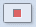

В этой вкладке вы можете установить параметры для теста фокусировки и начать тест фокусировки.
Изображение фокус-теста, см. Изображение теста Focus
Это отображает название материала, на котором вы будете проводить тест фокусировки. Материальное название было взято из вкладки «Материальный волшебник (3)».
Диапазон фокусировки составляет ± 100 мкм от «текущего фокуса». Он рассчитывается по ширине и количеству тест-полосок и диапазону изображения лазерного модуля.
Это отображает применимое в настоящее время значение фокусировки.
Испытательная мощность фокуса составляет примерно половину мощности лазерного модуля, которая определяется во время первоначальной установки на заводе.
|
|
|
 |
Нажмите эту кнопку, чтобы отменить тест фокусировки. Тарелка транспортируется из устройства. |
Эта кнопка включена, если «Текущий фокус» был изменен вручную. Нажмите «Вычислить» для расчета новых начальных и конечных значений (диапазон фокусировки от - до) для теста фокусировки.
Настройки отправляются на диктофон и включаются при нажатии «Применить».
Нажмите «Близко», чтобы вернуться к «Материальный волшебник (1)». Используются значения диапазона фокусировки, текущего фокуса и мощности теста фокусировки. Эти значения не используются, если тест в настоящее время выполняется.
Нажмите «Назад», чтобы вернуться к «Материальный волшебник (4)». Используются значения диапазона фокусировки, текущего фокуса и мощности теста фокусировки. Эти значения не используются, если тест в настоящее время выполняется.
Нажмите «Далее», чтобы открыть «Материальный Волшебник (6)». Используются значения диапазона фокусировки, текущего фокуса и мощности теста фокусировки. Эти значения не используются, если тест в настоящее время выполняется.
Copyright © 2016 Heidelberger Druckmaschinen AG